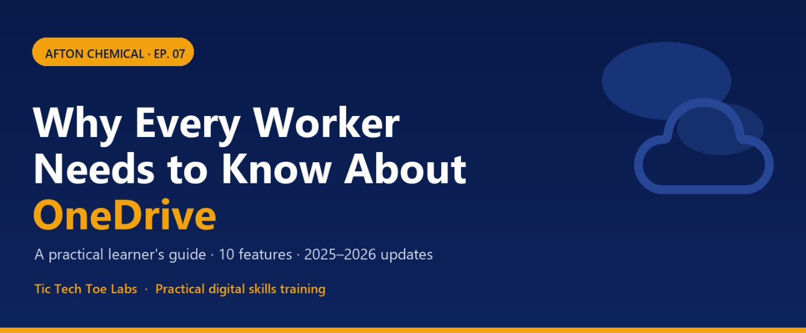
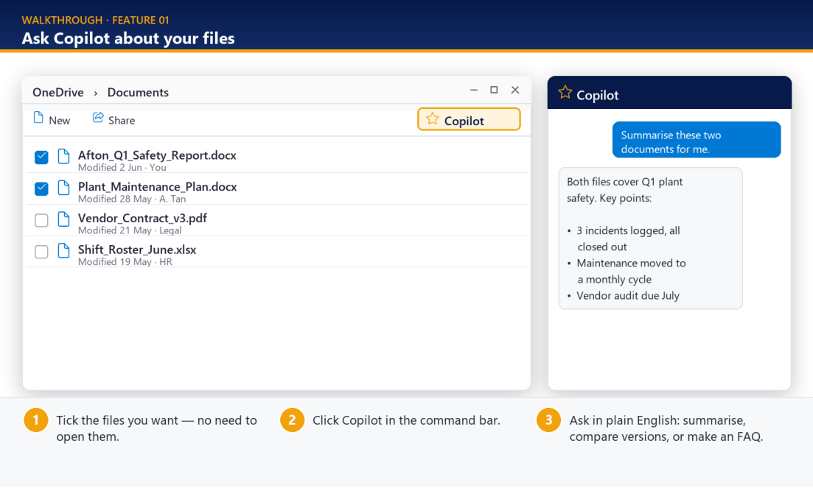
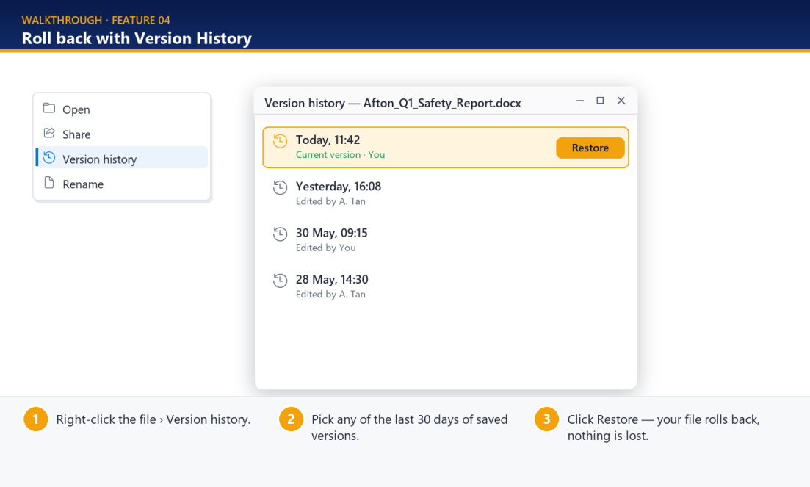
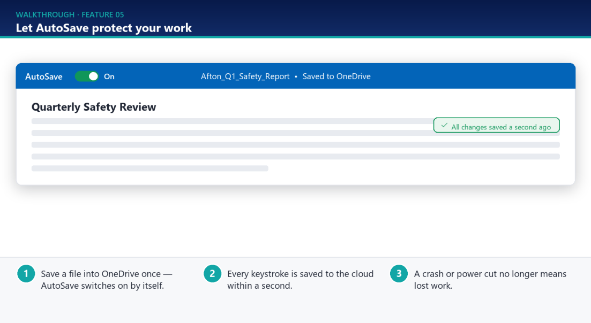
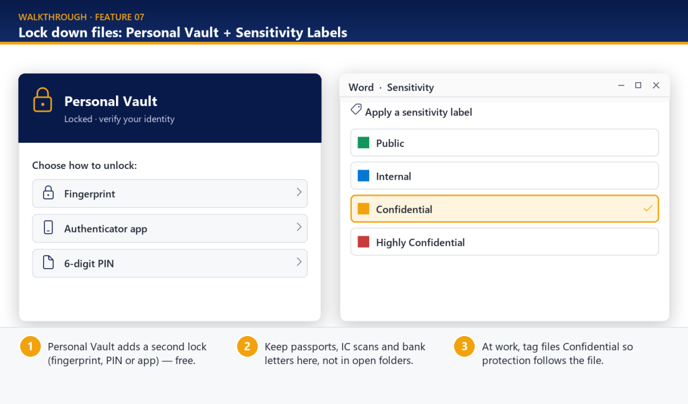
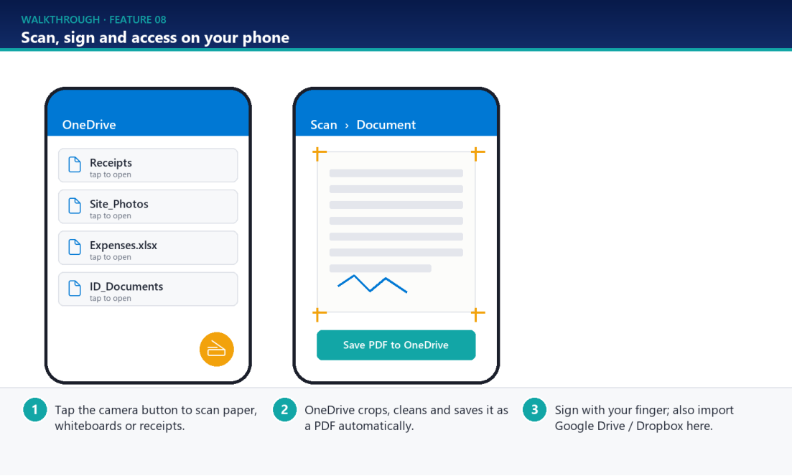
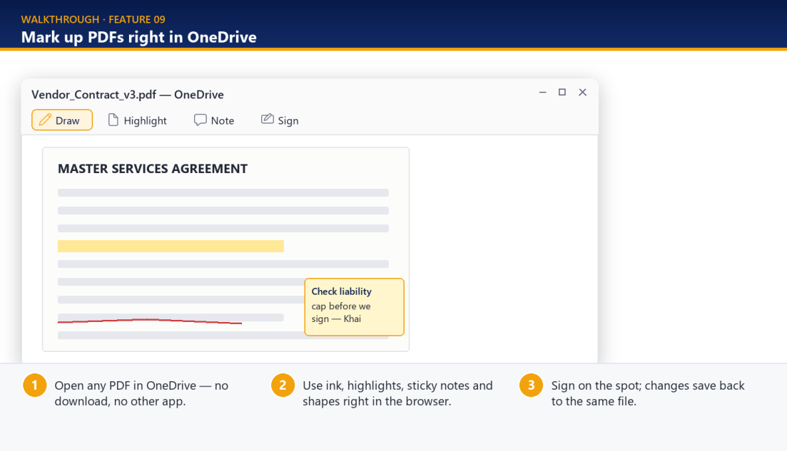
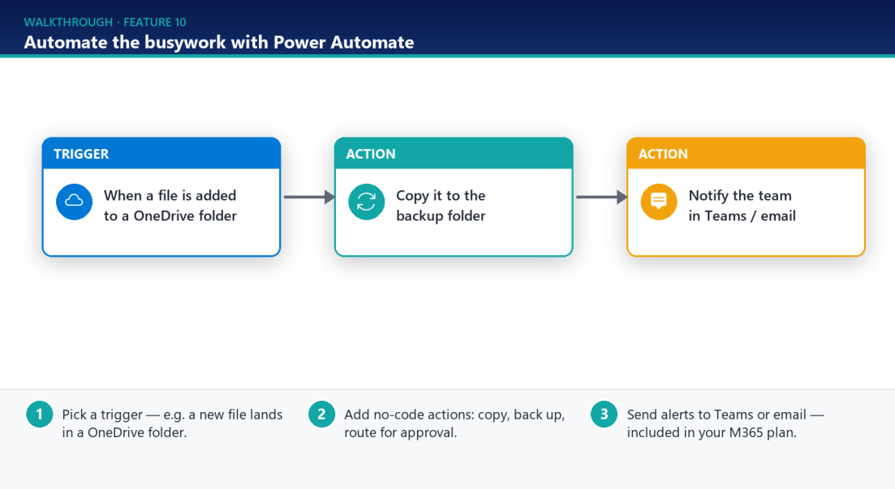

Why Every Worker Needs to Know About OneDrive

A practical learner's guide for everyone at Afton Chemical. Ten OneDrive features that save time, protect your work and cut out manual busywork — reflecting the 2025–2026 updates. Prepared by Tic Tech Toe Labs.
How to use this guide
- Each feature has the same three parts: why it matters, a labelled walkthrough picture, and a short "Try this" you can follow at your desk.
- You do not need to read it in order. Jump to the feature you need today.
- Every section ends with one small action to do within 7 days. Do those, and the habits stick.
- Examples use a chemical-plant and office setting, but the steps are the same for any team.
What you will be able to do
Click any topic below to jump straight to that section.
- Use Copilot to summarise and compare files without opening them
- Protect your key folders automatically with Folder Backup
- Free up disk space while keeping every file within reach
- Recover earlier versions of a file from the last 30 days
- Rely on AutoSave so a crash never costs you work again
- Co-author documents live and share one current copy by link
- Lock down sensitive files with Personal Vault and sensitivity labels
- Scan, sign and reach your files from your phone
- Mark up and sign PDFs without leaving OneDrive
- Automate repetitive file tasks with a simple Power Automate flow
Ask Copilot About Your Files
The biggest productivity change OneDrive received in 2025 is built-in Microsoft 365 Copilot. From the OneDrive file list, you can work with documents without even opening them.
For a busy plant or office, that means less time hunting through files and more time acting on what they say.
What this lets you do
- Summarise several documents at once without opening them.
- Compare two versions of a document — for example a contract or a procedure — side by side.
- Ask plain-English questions about your files and get instant answers.
- Generate an FAQ automatically from a long document.
- Right-click a recent file in File Explorer and choose Ask Copilot (in preview for Windows Insiders).
Walkthrough

Try this
- Open OneDrive in your browser and tick the files you want to work with — no need to open them.
- Click Copilot in the command bar at the top of the file list.
- Type a request in plain English, e.g. "Summarise these two reports" or "Compare these versions and list what changed."
- Read the answer, then ask a follow-up to go deeper or to draft an FAQ.
Good to know
Copilot in OneDrive needs a Microsoft 365 Copilot add-on licence (about US$30/user/month). Confirm current Singapore pricing with your IT team first.
Your 7-day action
- This week, ask Copilot to summarise two related documents — and note the time it saves.
Turn On Folder Backup (Known Folder Move)
Folder Backup — also called Known Folder Move — automatically copies your Windows Desktop, Documents and Pictures folders to the cloud.
It is one of the most under-used features in OneDrive. Most people only discover it after a hard-drive failure, when it is too late.
What this lets you do
- Protect your three most important folders without thinking about it.
- Recover your files on a new device just by signing in.
- Stop keeping the only copy of important work on a single PC.
Walkthrough
![Walkthrough: the click path OneDrive tray icon, Settings, Sync and back up, Manage backup. The Manage folder backup window shows Desktop, Documents and Pictures all switched on with a Start backup button. Note 'Why it matters: if this PC is ever lost, stolen or wiped, these three folders are already safe in the cloud.' Labels: 1 Find the OneDrive cloud icon in your taskbar tray (bottom-right). 2 Settings, Sync and back up, Manage backup. 3 Toggle each folder on; files now copy to the cloud automatically.](images/ep07/ep07-p03-1.png)
Try this
- Find the blue OneDrive cloud icon in your taskbar tray (bottom-right of the screen).
- Click the cloud, then the gear icon, and choose Settings.
- Go to Sync and back up, then click Manage backup.
- Switch on Desktop, Documents and Pictures, then click Start backup.
Your 7-day action
- Turn on Folder Backup for all three folders today. From now on, anything you save to your Desktop is automatically protected.
Free Up Disk Space With Files On-Demand
Files On-Demand lets every OneDrive file appear in File Explorer without taking up space on your hard drive. A file only downloads when you open it.
When you need a file offline — travelling, on a plant site with poor signal — you can pin it to your device in one click.
What this lets you do
- See all your files while using almost no local disk space.
- Tell at a glance which files are online-only and which are on your device.
- Keep specific files available offline for travel or low-signal areas.
Walkthrough

Try this
- Open File Explorer and look at the Status column for your OneDrive files.
- A cloud icon means the file is stored online only and uses no disk space.
- A green tick means the file is downloaded and available offline.
- Right-click any file and choose Always keep on this device to pin it for offline use; choose Free up space to send it back to the cloud.
Good to know
New in 2026: OneDrive sync now supports up to 1 million items per device (up from 300,000) — in Public Preview for eligible Windows 11 PCs with 16GB+ RAM and an SSD.
Your 7-day action
- Use Free up space on one large folder you rarely open, and pin one folder you need on the road.
Roll Back With Version History
OneDrive keeps up to 30 days of version history for every file — Word, Excel, PowerPoint, PDFs, photos, even CAD files and videos.
If a colleague overwrites something important or you delete content by accident, you can roll the file back to any earlier saved version. Nothing is lost in the process.
What this lets you do
- Recover an earlier version of a file from the last 30 days.
- Undo an accidental overwrite without re-doing the work.
- Keep extended history for sensitive files stored in Personal Vault.
Walkthrough

Try this
- Right-click the file in OneDrive or File Explorer.
- Choose Version history.
- Browse the list of saved versions by date and time.
- Select the version you want and click Restore. The file rolls back and your current version is still kept as well.
Your 7-day action
- Open Version history on a working file you edit often, just to see how many saved versions are already there. Knowing it exists is half the value.
Let AutoSave Protect Your Work
When a file is stored in OneDrive, AutoSave switches on by itself in Word, Excel and PowerPoint. Every change is saved to the cloud within a second.
That removes the most common cause of lost work — a crash or power cut before you remembered to press Save. In 2025, Word also began saving new documents straight to OneDrive without a separate "Save to cloud" step.
What this lets you do
- Stop losing work to crashes, freezes or power failures.
- See a live "all changes saved" indicator while you type.
- Trust that the cloud copy is always the latest one.
Walkthrough

Try this
- Save your file into a OneDrive folder once (or create it there).
- Check that the AutoSave switch at the top-left of the Office window shows On.
- Work as normal. Every keystroke is saved automatically — there is nothing else to press.
- If AutoSave is off, it usually means the file is saved on your local drive, not in OneDrive. Move it to OneDrive to turn it on.
Your 7-day action
- Check the AutoSave switch on the next Office file you open. If it is off, move the file into OneDrive so it is protected from now on.
Co-Author In Real Time
Several people can work on the same Word, Excel or PowerPoint file at once when it is stored in OneDrive, seeing each other's edits live.
Combined with inline comments and @mentions, this removes the email-attachment back-and-forth and the confusion of "which version is the latest?"
What this lets you do
- Edit a document together and see colleagues' cursors move in real time.
- Leave comments and @mention a specific person to pull them in.
- Share one link so everyone always works on the same, current copy.
- Add an expiry date and password when sharing with people outside the company.
Walkthrough
![Walkthrough: Plant_Maintenance_Plan.docx open as Shared with 3 people editing and live cursors labelled Khairun and S. Lim in the text; a comment from Khairun reads '@A. Tan can you confirm the August dates?'. The Share pane shows 'Anyone with the link can edit', a Copy link button, Set expiry date 30 Jun 2026 and Set password On. Labels: 1 Share a link instead of emailing attachments — one true copy. 2 See colleagues' cursors and edits live; @mention them in comments. 3 For outsiders, add an expiry date and password on the link.](images/ep07/ep07-p07-1.png)
Try this
- Open the file from OneDrive and click Share.
- Send a sharing link instead of attaching the file to an email — this keeps one true copy.
- As others open it, you will see their initials and live cursors in the document.
- Use Comments and type @ followed by a name to assign a question or task.
- For external recipients, set an expiry date and a password on the link before sending.
Practice file
Use COAUTHORING SAMPLE.xlsx to practise the steps above: upload it to your OneDrive, share it by link with a colleague, and edit it together while you watch each other's cursors and @mention each other in comments.
Your 7-day action
- Next time you would email an attachment for feedback, share a OneDrive link instead and ask for comments in the file.
Lock Down Files: Personal Vault & Sensitivity Labels
Personal Vault is a protected folder that needs a second identity check — fingerprint, PIN or Authenticator app — before it opens. It costs nothing extra, yet most people never switch it on.
For company files, Sensitivity Labels (now supported in the Microsoft 365 web apps as of May 2026) let you classify and protect confidential documents so the protection travels with the file across OneDrive and SharePoint.
What this lets you do
- Add a second lock to your most sensitive personal documents at no extra cost.
- Store passports, IC scans and bank letters away from your open folders.
- Tag work files as Confidential so access controls follow the file itself.
Walkthrough

Try this
- In OneDrive, open Personal Vault and verify your identity (fingerprint, PIN or Authenticator app).
- Move sensitive documents into the Vault. It re-locks automatically after a period of inactivity.
- For work files, open the Sensitivity option in Word, Excel or PowerPoint.
- Apply a label such as Confidential. The protection stays attached even if the file is shared or copied.
Your 7-day action
- Switch on Personal Vault and move one sensitive personal document into it. At work, apply a sensitivity label to one confidential file.
Scan, Sign And Access On Your Phone
The OneDrive mobile app (iOS and Android) lets you reach, edit and share files from your phone. Its built-in scanner turns paper documents, whiteboards and receipts into clean PDFs that upload automatically.
You can also sign documents with your finger. In 2025, the app added Manage Imports, which connects Google Drive and Dropbox — useful when consolidating cloud storage.
What this lets you do
- Scan paper, whiteboards or receipts into PDFs straight from your phone.
- Sign a document with your finger and save it back to OneDrive.
- Access and share any file when you are away from your desk.
- Pull files in from Google Drive or Dropbox via Manage Imports.
Walkthrough

Try this
- Install the OneDrive app and sign in with your work account.
- Tap the camera / scan button.
- Point your phone at the document. OneDrive crops, straightens and cleans the image.
- Save it as a PDF to OneDrive. To sign, open a document and use the signature tool, then save.
Your 7-day action
- Scan one paper document — a receipt, a signed form, a flip-chart from a meeting — with the OneDrive app this week and save it as a PDF.
Mark Up PDFs Right In OneDrive
New in 2025, you can annotate, mark up and sign PDFs directly in OneDrive — no downloading, no separate app. Tools include digital ink, text highlights, shapes and sticky notes.
This removes the slow round-trip of downloading a file, editing it locally and re-uploading. Markdown (.md) files can now also be viewed and edited in the browser with a live preview.
What this lets you do
- Review and comment on a PDF without leaving OneDrive.
- Highlight clauses, add sticky notes and draw with digital ink.
- Sign a PDF in the browser and have it save back to the same file.
Walkthrough

Try this
- Open any PDF stored in OneDrive — it opens straight in the browser.
- Use the toolbar to Draw, Highlight, add a Note or Sign.
- Mark up the document — highlight key text, drop a sticky note with a question, underline with ink.
- Your changes save back to the same file automatically. No download or re-upload needed.
Your 7-day action
- Open a PDF you would normally print to mark up, and add your comments directly in OneDrive instead.
Automate The Busywork With Power Automate
Connecting OneDrive to Power Automate (included in all Microsoft 365 plans) lets you build no-code automations that run by themselves.
A flow is a simple chain: a trigger starts it, then one or more actions follow. No coding is involved.
What this lets you do
- Automatically back up new files to a specific folder.
- Get a Teams or email alert when a file is modified or shared.
- Route documents for approval without chasing people by hand.
- Sync files between OneDrive, SharePoint, Teams, Outlook and 300+ other services.
Walkthrough

Try this
- Open Power Automate (in your Microsoft 365 app launcher) and choose Create.
- Pick a trigger, for example "When a file is created in a OneDrive folder."
- Add an action — copy the file to a backup folder, or send a notification to Teams.
- Save and turn on the flow. It now runs automatically every time the trigger happens.
Your 7-day action
- Think of one repetitive file task you do each week. Sketch it as a trigger and an action — that is your first flow.
Quick Reference — OneDrive Status Icons & Shortcuts
Status icons & shortcuts
| Icon / Action | What it does |
|---|---|
| Cloud outline icon | File is stored online only — uses no disk space. Downloads when you open it. |
| Green tick (outline) | File is downloaded and available offline on this device. |
| Solid green tick | File is pinned with "Always keep on this device." |
| Right-click → Always keep on this device | Pin a file for offline use (travel, low signal). |
| Right-click → Free up space | Send a file back to online-only to reclaim disk space. |
| Right-click → Version history | View and restore the last 30 days of saved versions. |
| Share button | Send a link instead of an attachment; add expiry date and password. |
| AutoSave switch (top-left of Office) | On = saving live to OneDrive. Off = file is on local drive. |
Glossary
- AutoSave
- An Office feature that saves your changes to the cloud continuously, within a second of each edit.
- Co-authoring
- Two or more people editing the same file at the same time and seeing each other's changes live.
- Files On-Demand
- Shows all your files in File Explorer while only downloading them when you open them, to save disk space.
- Folder Backup / Known Folder Move
- Automatically copies your Desktop, Documents and Pictures folders into OneDrive.
- Known Folder Move
- The technical name for Folder Backup.
- Microsoft 365 Copilot
- The AI assistant built into Microsoft 365 that can summarise, compare and answer questions about your files. Needs an add-on licence.
- Personal Vault
- A protected OneDrive folder that needs a second identity check (fingerprint, PIN or app) to open.
- Power Automate
- A no-code tool for building automated flows (a trigger plus actions) across Microsoft 365 and other apps.
- Sensitivity Label
- A tag such as Confidential that classifies a file and keeps its protection attached wherever it goes.
- Version History
- The last 30 days of saved versions of a file, which you can view and restore.
Further learning
These official and verified sources cover the features in this guide and are kept up to date.
- Microsoft Tech Community — 10 Essential OneDrive Tips — The official starting point for everyday OneDrive habits.
https://techcommunity.microsoft.com/blog/onedriveblog/10-essential-tips-for-using-onedrive-at-work-or-school/4030972 - OneDrive Sync Release Notes — Microsoft Learn — Where Microsoft publishes new sync features, including the 1-million-item update.
https://learn.microsoft.com/en-us/sharepoint/sync-release-notes - Sensitivity labels for SharePoint and OneDrive — Microsoft Learn — How file classification and protection works in Microsoft 365.
https://learn.microsoft.com/en-us/purview/sensitivity-labels-sharepoint-onedrive-files - Document collaboration and co-authoring — Microsoft Support — Step-by-step help for real-time co-authoring.
https://support.microsoft.com/en-us/office/document-collaboration-and-co-authoring-ee1509b4-1f6e-401e-b04a-782d26f564a4 - Use expiration dates and passwords — Microsoft Support — Securing links you share outside the company.
https://support.microsoft.com/en-us/office/video-use-expiration-dates-and-passwords-d4a5a9d9-5cc8-416d-8bb9-90d6c17fd919
Your Personal Action Plan
Fill this in and keep it where you work. Bring it to your next team catch-up to show what you have put into practice.
| Feature I will use | Where I will apply it at work | By when | How I'll know it worked |
|---|---|---|---|
About Tic Tech Toe Labs
Tic Tech Toe Labs is a Singapore-based workplace digital skills training provider. We help workers become confident with current AI and digital tools so they stay relevant and productive. Every programme is fully customised to the organisation, its industry and the tools teams already use. SkillsFuture funding is available for eligible programmes.
Contact: Khairun · khai@tictechtoelabs.com